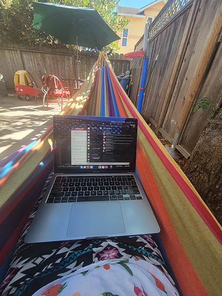

With a hard-to-explain job title like "Academic Technology Specialist", I've often gotten the question, "What's a normal day like for you?" Every day is different, but yesterday felt like a reasonably representative, busy day in the life of the ATS for the Division of Literatures, Cultures, and Languages. In order to have an answer for next time I get the question, I've written it up.
8:30 AM
I had a half-hour between dropping off the kids and the first meeting of the day, so I decided to tackle some email: ADHO things (I'm the representative for ACH, as one of the co-Presidents), replying to a planning email for an event in Vienna in October related to SUCHO, replying to an email about some sample METS XML files for books scanned as part of the Google Books project, a quick email about a course schedule change, an inquiry about IRB requirements related to a project I'm doing through ADHO, and confirming that everyone who needs to be is in touch regarding an upcoming grant opportunity.
I saw some activity on SUCHO Slack in the digitization channel, and amplified a question about flatbed scanner recommendations on Twitter, where we got a great assortment of tips and suggestions and pointers to existing resources and tutorials.
9 AM
9 AM was a meeting with Sarah Connell and Avery Blankenship to sketch out an outline for our Programming Historian lesson on word vectors. It's a method I first got into shortly after I started at Stanford, and I taught it -- somewhat haphazardly -- the first time I taught non-English DH. There's good materials on it here and there (including a nice series of posts by Ryan Heuser), but something that covers both the conceptual and practical bases is a gap in the Programming Historian offerings, as well as in my syllabus for when I re-teach non-English DH again this coming winter. A Twitter conversation last year or the year before led to this particular collaboration, which builds on materials from the Women Writers' Project NEH workshop series on word vectors.
Before the next meeting, I checked in on the responses to the Twitter posts, shared some of them back to SUCHO Slack, and dealt with some travel logistics for the October SUCHO trip.
10 AM
10 AM was a deep dive into retro-DH (Humanities Computing Era edition) with the French Revolution Analysis System (FRAS), originally a DOS-based database containing 1,108 cahiers de doleances (notebooks of grievances, AKA requests/demands), prepared by electoral assemblies in France in 1789. We had gotten one of the copies of this software running on a Windows XP emulator via Virtualbox, but couldn't make heads or tails of how it actually worked, given its super-minimal text-based interface and the complex coding system that underpinned its query engine. The 10 AM meeting was with James Stinchcomb, an independent scholar in Cincinnati and a long-time user of FRAS, who walked us through how the system works and what the metadata means. The original creator has passed away, and registered the software with the US Copyright Office, so there's some issues of getting permission from his heirs to reimagine the software and make it publicly available. But if we can do that, it would make a great addition to the set of resources under the French Revolution Digital Archive led by Dan Edelstein in the DLCL. Watching FRAS in action left me with tremendous respect for folks who undertook the precursors to modern DH work without modern tools -- either for developing software like this, or from the user side, e.g. being unable to easily preview your results without having to export the data outside the program first. That meeting ran up to and beyond the hour, at which point I had to hop over to another Zoom room...
11 AM
... to talk resources and tutorials for web archiving with Melody Kramer, who's worked as a journalist and is developing a toolkit for journalists as part of her MLIS program. She's found the tutorials we put together for SUCHO to be useful, and we talked through the pros and cons of different technologies and options, weighing factors like cost (long-term storage of huge web archives can get expensive) and accessibility for minimally-technical users.
After that brief call, I had a chance to finish the self-paced online course portion of the IDEAL Learning Journey, required diversity, equity, and inclusion training program at Stanford, register for the follow-up synchronous workshops, and send out a Doodle poll for a future meeting about Persian handwritten text recognition.
12 PM
Another Zoom call, this time with Antonia Murath, who will be visiting my department during winter quarter to work with Prof. Kathryn Starkey on a medieval DH project. We talked about the database she's putting together, different visualization options, the affordances you can add to qualitative coding if you have access to full-text, what I'm planning for the non-English DH class in the winter, and the Data-Sitters Club.
After that call, I followed up on some more scheduling emails, including meetings with visitors this fall, and a planned visit to Stanford Surplus to pick up some more tables and other equipment for the Textile Makerspace. I threw some cheese sticks in the air fryer and then ate them while reading a draft of a delightful short piece by Claire Battershill for the Endings Project (featuring one of my favorite children's books, "We are In a Book" by Mo Willems). Sent another email following up on when/where it will be published, because I want to teach with it, which took me right up to the next Zoom call.
1 PM
This was a large meeting, with the other DH ATSes, the head of CIDR (my sub-organization within the Library), the head of the Stanford Digital Repository (SDR), and other folks from SDR and metadata to talk about how ATSes like myself could access information about what's been digitized through Google Books, and submit requests for our researchers to be able to access that data under the conditions that have been defined for its use. The plan going into the meeting was that I'd get a dump of 2.4M METS XML metadata records, and parse what I thought would be useful into a spreadsheet that we could query, but the conclusion was that it would make mores sense for us to use an existing backend library metadata querying tool, which sounds like an improvement to me! During some of the more in-the-weeds discussion, I worked on some file wrangling, PDF-ifying books that I've scanned for YRDL to make it easier to do bulk OCR.
2 PM
I've been trying to come up with a substitute for public transit (my most-effective writing spot) when I'm working from home. The hammock on the back patio has proven to be a workable alternative, and I've been setting aside time to work on various writing projects (including the SUCHO Handbook of Emergency Web Archiving, a guide to HPC for humanists, and the next Data-Sitters Club book). Today, it was proofs for two chapters for The Bloomsbury Handbook to the Digital Humanities (on multilingual DH and whether coding is necessary to do DH), then rereading the latest version of Data-Sitters Club book 15, and working towards weaving in the code components.
3:30-5
An email came in while I was writing, with the news that the Library Systems folks had rolled out a patch that enabled an export of up to 10,000 library catalog records (instead of the previous 20) as JSON (instead of bibliographic formats). So I dove right into trying to export the 30,000 results I needed, then using OpenRefine to munge the data into a spreadsheet, and figure out which of the many, many metadata columns contained the information I actually needed.
Meanwhile, I was brainstorming with fellow Data-Sitter Katia Bowers how to get access to the full text and metadata of Slavic department dissertations from 2000-2020 for a named-entity extraction project, which parallels some work I've been doing on dissertations from my department from that same period, as a way to visualize for prospective students what our grad students write about. This led to some Slack messages with Kate Barron, our library Data Curator, about better routes than downloading the dissertations one by one.
At the same time, I was exploring an online collection of Ukrainian literature, with an eye towards writing a web scraper for an upcoming multilingual text analysis project through the Stanford Literary Lab, with Prof. Yuliya Ilchuk and a number of grad students.
Not the end
I didn't finish any of those things before it was time to go pick up the kids. But they'll be waiting for me tomorrow, along with the unfinished writing, the websites that need migrating, the summer projects and grad students who have been quiet lately and maybe could use some checking-in-on, the 200 emails in my inbox that need to be responded to or filed away, the new Slack messages that will come in overnight from SUCHO, and probably ten other things that aren't at the front of my mind but will, undoubtedly, show up in my inbox or Slack workspaces or DMs or text messages. Such is the nature of the job.